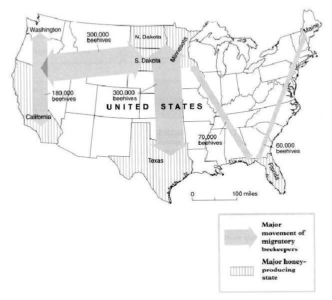

To eke out a full-time living from their honeybees, about half the nation’s 2,000 commercial beekeepers pull up stakes each spring, migrating north to find more flowers for their bees. Besides turning floral nectar into honey, these hardworking insects also pollinate crops for farmers -for a fee. As autumn approaches, the beekeepers pack up their hives and go south, scrambling for pollination contracts in hot spots like California’s fertile Central Valley.

Of the 2,000 commercial beekeepers in the United States about half migrate This pays off in two ways Moving north in the summer and south in the winter lets bees work a longer blooming season, making more honey — and money — for their keepers. Second, beekeepers can carry their hives to farmers who need bees to pollinate their crops. Every spring a migratory beekeeper in California may move up to 160 million bees to flowering fields in Minnesota and every winter his family may haul the hives back to California, where farmers will rent the bees to pollinate almond and cherry trees.
Migratory beekeeping is nothing new. The ancient Egyptians moved clay hives, probably on rafts, down the Nile to follow the bloom and nectar flow as it moved toward Cairo. In the 1880s North American beekeepers experimented with the same idea, moving bees on barges along the Mississippi and on waterways in Florida, but their lighter, wooden hives kept falling into the water. Other keepers tried the railroad and horse- drawn wagons, but that didn’t prove practical. Not until the 1920s when cars and trucks became affordable and roads improved, did migratory beekeeping begin to catch on.
For the Californian beekeeper, the pollination season begins in February. At this time, the beehives are in particular demand by farmers who have almond groves; they need two hives an acre. For the three-week long bloom, beekeepers can hire out their hives for $32 each. It’s a bonanza for the bees too. Most people consider almond honey too bitter to eat so the bees get to keep it for themselves.
By early March it is time to move the bees. It can take up to seven nights to pack the 4,000 or so hives that a beekeeper may own. These are not moved in the middle of the day because too many of the bees would end up homeless. But at night, the hives are stacked onto wooden pallets, back-to-back in sets of four, and lifted onto a truck. It is not necessary to wear gloves or a beekeeper’s veil because the hives are not being opened and the bees should remain relatively quiet. Just in case some are still lively, bees can be pacified with a few puffs of smoke blown into each hive’s narrow entrance.
In their new location, the beekeeper will pay the farmer to allow his bees to feed in such places as orange groves. The honey produced here is fragrant and sweet and can be sold by the beekeepers. To encourage the bees to produce as much honey as possible during this period, the beekeepers open the hives and stack extra boxes called supers on top. These temporary hive extensions contain frames of empty comb for the bees to fill with honey. In the brood chamber below, the bees will stash honey to eat later. To prevent the queen from crawling up to the top and laying eggs, a screen can be inserted between the brood chamber and the supers. Three weeks later the honey can be gathered.
Foul smelling chemicals are often used to irritate the bees and drive them down into the hive’s bottom boxes, leaving the honey- filled supers more or less bee free. These can then be pulled off the hive. They are heavy with honey and may weigh up to 90 pounds each. The supers are taken to a warehouse. In the extracting room, the frames are lilted out and lowered into an “uncapper” where rotating blades shave away the wax that covers each cell. The uncapped frames are put in a carousel that sits on the bottom of a large stainless steel drum. The carousel is filled to capacity with 72 frames. A switch is flipped and the frames begin to whirl at 300 revolutions per minute; centrifugal force throws the honey out of the combs. Finally the honey is poured into barrels for shipment.
After this, approximately a quarter of the hives weakened by disease, mites, or an ageing or dead queen, will have to be replaced. To create new colonies, a healthy double hive, teeming with bees, can be separated into two boxes. One half will hold the queen and a young, already mated queen can be put in the other half, to make two hives from one. By the time the flowers bloom, the new queens will be laying eggs, filling each hive with young worker bees. The beekeeper’s family will then migrate with them to their summer location.
Adapted from “America's Beekeepers: Hives for Hire” by Alan Mairson, National Geographic.